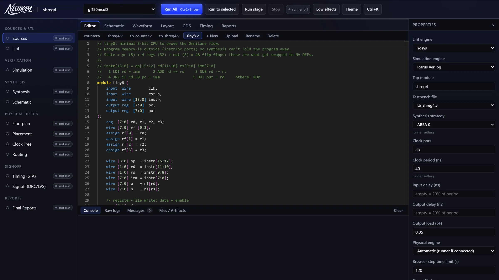
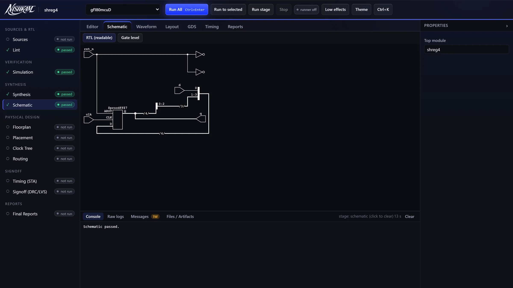
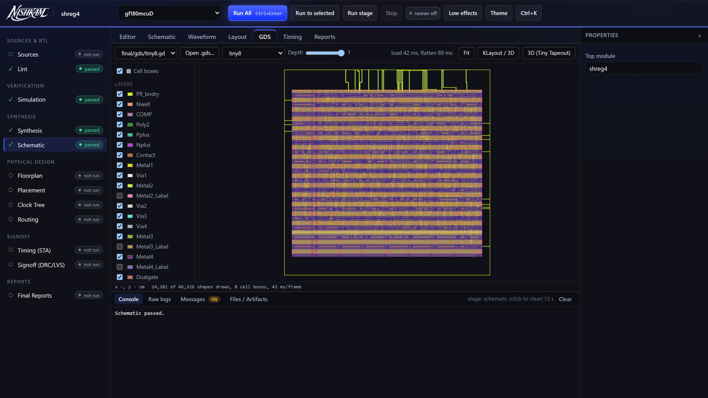
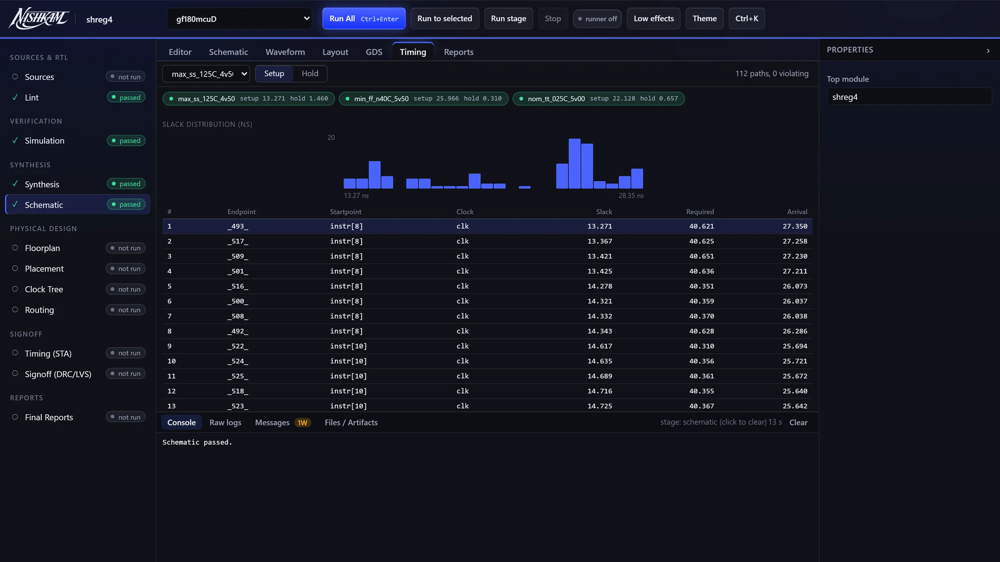

Nishkam is free practice for IC and chip designers. Solve problems in your browser, and use Studio, a free editor for the whole path from RTL to a finished layout (GDS), on open-source PDKs. Nothing to install.
Studio needs an access key.
Build a 4-bit up-counter. Synchronous active-high reset. Count when en=1, wrap from 15 to 0, hold otherwise.
Proved equal to a reference for every input sequence and every cycle after reset.
Write Verilog, press submit, and see right away whether it matches the reference. If not, you see the exact cycle where it differs.
Start practicing →Edit, simulate, synthesize and view your design as a schematic and a layout. Place, route, timing and layout checks also run in the browser.
Open Studio →An editor with your design and its testbench, and one button to run the whole flow.
Your Verilog drawn as logic, so you can check it is what you meant.
The finished GDS of tiny8, a small 8-bit CPU, on gf180mcuD, layer by layer.
Real OpenSTA results: slack for every path.




Screenshots of Studio. The layout and timing come from a real run of tiny8.
A real layout made in Studio: tiny8 on gf180mcuD. Each layer shows the real shapes, simplified to fit.
Write Verilog in a code editor. The problems are written by a working IC designer.
A solver proves your design matches the reference for every input and every cycle after reset, so there are no hidden test cases. If something differs, you see the exact cycle.
Turn a working design into a real layout: synthesis, placement, routing and checks, using open tools.
Your design and a reference are joined and handed to Yosys' SAT solver, running in your browser. It looks for any sequence of inputs that makes them disagree. When it finds one, you get that exact trace, not "test 7 failed".
Cycle 13: expected 10, yours 0. Your counter wraps at 9.
Everything here runs in your browser.
| Stage | Tools | Made by |
|---|---|---|
| Lint | Yosys, Verilator (verilator-wasm) | YosysHQ · Wilson Snyder |
| Simulation | Icarus Verilog | Stephen Williams |
| Waveforms | Surfer | Linköping University |
| Synthesis | Yosys + ABC, gf180mcu 7-track cells | YosysHQ · cells: Google + GlobalFoundries |
| Schematic | netlistsvg + ELK | Neil Turley |
| Placement | graywolf (qflow) | Yale University (TimberWolf) |
| Clock tree | OpenROAD TritonCTS (WebAssembly) | Mateus Fogaça, UFRGS |
| Routing | qrouter (qflow) | Tim Edwards |
| Timing | OpenSTA, before layout and after routing (with wires from Magic) | James Cherry, Parallax Software |
| DRC · GDS | Magic | UC Berkeley (Ousterhout and students); kept up by Tim Edwards |
| RC extraction | Magic (wires to SPEF, for timing) | as Magic above |
| LVS | Netgen | kept up by Tim Edwards, Open Circuit Design |
| Layout view | KLayout (kwasm) 2D / 3D · Tiny Tapeout Explorer 3D | Matthias Köfferlein · Alexander Mordvintsev |
Nishkam gives back: we found and reported a bug in Netgen (netgen#111), fixed upstream in 1.5.325.
All open source. PDK: GlobalFoundries gf180mcuD.
Research directions, not promises. We will add them as they prove useful.
निष्काम (nishkām): doing the work fully, without craving the reward.